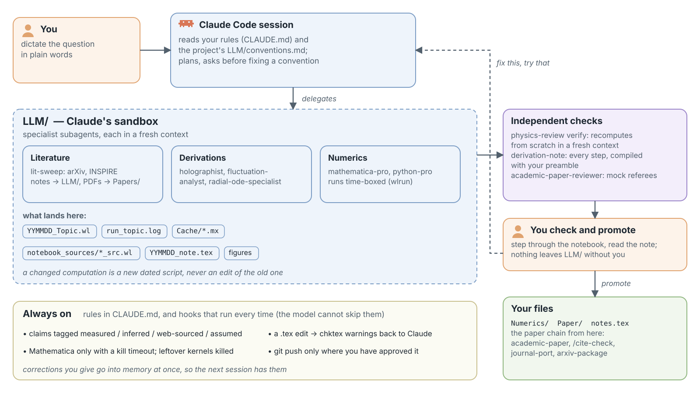
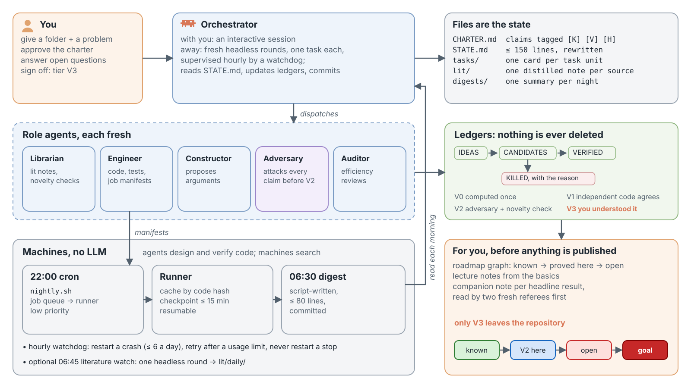

Practicalities
- 12:00–14:00 foundations, 14:00–14:30 coffee break, 14:30–16:30 advanced. Laptops out.
- No experience needed, exercises proceed gradually from basic to advanced
- Questions: interrupt us anytime. There are no stupid questions. If you're lost, three others are too.
- It's OK to discuss with people next to you during the presentation, but don't be too loud.
- We focus here on practice; philosophy, ethics and the future of science: the coffee break and at the end.
- A warning: some of what we show may feel threatening to how we work as scientists. That's a legitimate reaction, so let's talk about it.
- Materials: github.com/AgenttiX/ai-workshop
Schedule
Session 1: Foundations, 12:00–14:00
- Welcome
- The state of AI in 2026
- Honest caveats
- Setup check
- Live demo: exercise 01
- Hands-on exercises
- Recap
Session 2: Advanced, 14:30–16:30
- Extending the harness
- Making your project AI-ready
- Two demos: research setups (attended physics, autonomous mathematics) and running local models
- Hands-on and discussion
- Final words
Theory and demos come first, the hands-on part gets the rest of the time.
After this workshop, you'll be able to:
- Understand the main developments of AI in recent years and the related jargon
- Understand why an AI agent working with your files can do far more than a chat window
- Run an AI agent on a real project
- Use guiding files like an
AGENTS.mdand manage the context window - Extend the harness with custom functionality
- Make your research code "AI-ready", so that the agent catches its own mistakes
- Judge when not to use AI
How we learned these things: by asking
- We learned to use these tools on our own, mostly by asking Claude and other models: "What does this error mean?", "What is a virtual environment?", "How do I do this in VS Code?"
- That is a mindset shift: a patient, comprehensive explanation of anything is one conversation away, at your level, as many times as you need it
- Today: when in doubt, ask AI first, then us. This is a skill of its own.
- The usual rule still applies: check the outputs that matter. They can be wrong, and we'll show you how to catch that
Stuck? Try: "I'm new to this. Explain what just happened and what to do next."
Words we'll use all day
| Model | A large language model (LLM). A neural network that is trained on vast amounts of data to generate text based on its inputs. |
| Harness | A program around the model that makes it capable of interacting with the world: it gives the model tools, manages its context and asks your permissions. Claude Code is a harness. |
| Agent | Model + harness = agent. A model that acts on its own: it reads files, runs commands, checks the results and repeats. |
| Tool call | One action of the agent, e.g. "read this file" or "run this command". |
| Context window | Everything the model sees at once: your messages, its replies, the files it has read. It has a maximum size. |
| Git, repository | Git is a version control system that records every change to a project folder called a repository, so that you can review and undo them. |
Glossary 1/3: models and agents
| Model, LLM | The AI itself: a large language model, trained on huge amounts of text to predict what comes next |
| Prompt | What you write to the model |
| Token | The unit a model reads and writes: a short word or a piece of a longer one. Limits and prices are counted in tokens |
| Context window | Everything the model sees at once: messages, replies, files read. Limited in size |
| Compaction | Summarizing the conversation so far to free up the context window |
| Reasoning model | A model that "thinks" (writes out intermediate steps) before answering |
| Open-weight model | A model you can download and run on your own computer |
| Hallucination | A confident, plausible, wrong answer (note the anthropomorphism and question its validity) |
| Sycophancy | The model's tendency to agree with you |
| Prompt injection | Instructions for the agent hidden in a web page, file or paper it reads |
| Agent | A model that acts autonomously: reads files, runs commands, checks results, repeats |
| Harness | The program that makes a model an agent: tools, context management, permissions. E.g. Claude Code |
| Tool call | One action of the agent, e.g. reading a file or running a command |
| API | The interface through which programs (rather than people) talk to a model or service |
Glossary 2/3: code and your project
| Terminal | A window for typing commands. Also: command line, shell. Windows: PowerShell |
| VS Code and VSCodium | A code editor. Extensions add features, e.g. Claude Code; Ctrl+Shift+P (Mac: Cmd+Shift+P) finds any command |
| Package | A library of code you install, e.g. NumPy with pip |
| Virtual environment | A folder with its own Python and packages, separate from the rest of the computer |
| Git, repository | Git is a version control system that records every change to a project folder (a repository) so you can review and undo it. GitHub (or GitLab, BitBucket etc.) host Git repositories online |
| Commit, diff | A commit is a snapshot of a repo saved by Git with a message; a diff shows what changed between two versions |
| Markdown, JSON | Plain-text formats: Markdown for formatted text (AGENTS.md), JSON for structured data (settings.json) |
| Test | A small program that checks code against a known answer (or that the code doesn't crash) |
| Linter, type checker | Programs that check code for common mistakes, messy style and wrong kinds of values |
| CI | Continuous integration: a server runs the checks on every change you push |
| AGENTS.md, CLAUDE.md | Standing instructions the agent reads at the start of every session |
| Permissions | The agent asks before acting; an allow-list names what it may do without asking. Plan mode: it only proposes until you approve |
Glossary 3/3: extending, training, measuring
| Skill | Instructions (and scripts) loaded only when the task matches their description |
| Hook | A command run automatically at a fixed moment, e.g. after every edit |
| Subagent | A separate agent with its own context that does a task and reports back |
| MCP server | A plug-in program that gives the agent new tools or data |
| Headless | Running the agent from a script, without the interactive window |
| Parameters, weights | The adjustable numbers of a model, set during training; their count is the model's size |
| Training | Pre-training: learning to predict text. Post-training: turning that into a helpful assistant, largely by reinforcement learning (trying, being scored, improving) |
| Inference | Running a trained model to produce output: what you pay for per token. |
| GPU | The parallel processor that AI is trained and run on |
| Benchmark | A fixed set of tasks for comparing models |
| Time horizon | The length of task, in skilled-human working time, that an agent completes with e.g. 50 % success |
| Rate limit | How much you may use per hour or week. Agents reach it quickly |
| Auto mode | A permission mode in which a second model approves the agent's actions instead of you |
2018–2024: from chat to reasoning
2018–2023: chat
- Jun 2018 GPT-1 with 117M parameters
- Feb 2019 GPT-2 with 1.5B parameters
- Nov 2022 ChatGPT: a chat window on GPT-3.5
- Mar 2023 GPT-4: bar exam top 10 %; 8k-token context
- Jun 2023 Function calling: the model writes JSON to call your tools
- Jul–Nov 2023 Claude 2 / 2.1: 100k → 200k-token context; Llama 2: open weights
2024: long context, agents, reasoning
- Feb Gemini 1.5: 1M-token context
- Mar–May Devin, SWE-agent: the first coding agents solve ~13 % of SWE-bench issues
- Jul GPT-4o mini: $0.15 per million tokens, 99 % cheaper than 2022's davinci
- Sep o1: reinforcement learning on chains of thought; AIME 12 % → 83 %
- Oct Nobel prizes: Hopfield & Hinton (physics), Hassabis & Jumper (chemistry)
- Oct–Nov Claude computer use; the Model Context Protocol (MCP)
- Dec o3: 76–88 % on ARC-AGI-1; DeepSeek-V3 trained in 2.8M GPU-hours
2025–2026: agents
2025: agents in the terminal
- Jan DeepSeek-R1: open-weight reasoning learned by reinforcement learning
- Feb Claude Code and Copilot agent mode, the same day; task horizon ~1 h
- Mar METR: the task horizon doubles every ~7 months (since 2024: ~4)
- May AlphaEvolve: 4×4 complex matrices in 48 multiplications
- Jul IMO gold-medal level (35/42) by OpenAI and Google DeepMind
- Jul METR trial: developers 19 % slower with AI, but felt 20 % faster
- Dec MCP and AGENTS.md go to the Linux Foundation
2026: agents doing research
- Feb Opus 4.6: 1M context, agent teams; task horizon ~12 h
- Feb GPT-5.2 conjectures a formula for gluon amplitudes (arXiv:2602.12176)
- Apr Anthropic withholds Mythos Preview over the zero-days it found
- May An OpenAI model disproves Erdős's unit-distance conjecture
- Jul Agents in a cyber evaluation break into Hugging Face
- Aug Claude: proven share of zeta zeros on the critical line 41.6 % → 67 %
- Sep Forced Navier–Stokes blow-up: ~10 000 agents, 88 h
- Sep FrontierMath Tier 4 at 100 %; ARC-AGI-2 at 95 %
The 2026 maths results are mostly the companies' own claims, some with Lean formalisations; independent peer review is still pending.
Where this is heading
Measured
- Task horizon doubles every ~4 months (129 days, 95 % CI 104–158)
- Frontier training compute: ×5 per year
- Forecasters underestimate: in 2021, 13 % predicted on MATH for 2022; actual 50 %
Extrapolated, if the trends hold
- Horizon ~500 h, three work-months, by end of 2027 (CI 250–1200 h)
- 2×1029 FLOP runs feasible by 2030; power and chips are the likely limits
- Public human text (~300T tokens) used up in 2026–2032
- Data centres: ~950 TWh in 2030, ~3 % of world electricity
Opinion
- Human-level AI: AI researchers' median 2047 (2023 survey); Metaculus 2031
- METR: AI may already speed up AI progress ~1.5× (preliminary)
METR; Epoch AI; IEA, Energy and AI (2025); K. Grace et al., arXiv:2401.02843; J. Steinhardt (2022); Metaculus, as of 7 Oct 2026.
A plot to keep in mind: task horizon
- How long a task (measured by how long it takes a human expert) an AI completes on its own with 50 % success. Doubling every ~4 months since 2023. Note the logarithmic scale
- 2023: minutes. 2025: from ~1 h to ~6 h. 2026: ~12 h, and the best models are beyond what the benchmark can measure reliably
- Extrapolation is dangerous, but the trend hasn't bent yet.
Our plot of METR's data: time horizons (May 2026), GPT-5.6 Sol (June 2026). T. Kwa et al., Measuring AI ability to complete long tasks, arXiv:2503.14499.
Models today
- Frontier models, in the providers' clouds:
 Anthropic: Claude 5 (Fable 5.1, Opus 5.5, Sonnet 5.5, Haiku 5.5)
Anthropic: Claude 5 (Fable 5.1, Opus 5.5, Sonnet 5.5, Haiku 5.5) OpenAI: GPT-6 Astra, GPT-6.1 Sol, GPT-6 Luna
OpenAI: GPT-6 Astra, GPT-6.1 Sol, GPT-6 Luna Google: Gemini 4 Argon (rolling out), Gemini 3.1 Pro, Gemini 3 Deep Think, Gemini 3.8 Flash
Google: Gemini 4 Argon (rolling out), Gemini 3.1 Pro, Gemini 3 Deep Think, Gemini 3.8 Flash
- Open-weight models, which you download and run yourself. The best are ~4 months behind the frontier (Epoch AI):
- Smaller sizes on a laptop or a gaming GPU:
 Gemma 4 (Google),
Gemma 4 (Google),  Qwen 3.8 (Alibaba)
Qwen 3.8 (Alibaba) - On a server:
 Mistral Large 4 or "Le Chonk",
Mistral Large 4 or "Le Chonk",  Kimi,
Kimi,  DeepSeek
DeepSeek
- Smaller sizes on a laptop or a gaming GPU:
- The frontier models: context windows of up to ~1M tokens, reasoning (more "thinking" time buys better answers), tool calls
Science is not done in a chat window
- Navier–Stokes, September 2026: ~10 000 cooperating AI agents ran for ~88 hours and produced a 166-page proof, checked in the Lean proof assistant. Not yet peer-reviewed; the unforced problem remains open. (OpenAI, Finite time blowup for Navier–Stokes, preprint, 8 Sep 2026; Lean code)
- The pattern in recent results: not a person asking a chatbot, but agents running for hours or days — deriving, coding, checking, iterating
- The same pattern scaled down is what you'll use today: an agent that reads your code, runs your tests and fixes its own errors
- Closer to home: Claude Code ran whole particle-physics analyses on LEP and CMS open data (Moreno et al., 2026)
Prompts from real research
Please implement the double-broken power law from arXiv:2403.03723 (DOI:10.1088/1475-7516/2024/10/020) as science.spectrum.dbpl2024.PowerSpectrumDBPL2024. Rename the existing PowerSpectrumDBPL as PowerSpectrumDBPL2021. If the article is not already in ./literature/, download it there, and read its LaTeX source from there.
I have received a bug report that the code seems to produce a dip in the temperature profile at the bubble wall using the values below. Please investigate this and if there is still a bug, please fix it.
alpha_n = 0.068
a_s = 11.582548/0.84
a_b = 11.582548
v_wall = 0.6428908756714361
model = BagModel(a_s=a_s, a_b=a_b)
temp = model.temp(bubble.w, bubble.phase)
Result: a correct implementation of the physics of the article, verified manually afterwards line by line. All I had to change were the page numbers of the cited articles, which were off by one.
Result: a correct fix for an off-by-one bug that had been in the code for years.
An overnight research task
Please investigate how xxxxxx xxxxxx xxxxxx xxxxxx xxxxxx xxxxxx xxxxxx xxxxxx is inserted properly into the xxxxxx xxxxxx xxxxxx equations. Is the current implementation such as xxxxxx xxxxxx xxxxxx xxxxxx correct? What xxxxxx xxxxxx xxxxxx xxxxxx xxxxxx xxxxxx xxxxxx xxxxxx xxxxxx xxxxxx xxxxxx xxxxxx appear in the GW power spectrum when inserting xxxxxx xxxxxx xxxxxx xxxxxx into the xxxxxx xxxxxx xxxxxx? Investigate this and related questions autonomously until 4:45 AM (local UTC+3 time), and document your findings in ./notes/. Please create a Markdown report with step-by-step LaTeX equations in ./notes/. You may create commits in this phd-research repository, but not in any other repository. You may edit the local copy of the PTtools repository.
Result: when I woke up, there was a 14-page report and a Monte Carlo simulation code with new results that, after a more thorough investigation, are likely to become a scientific article. (The 4:45 AM time limit is due to my 5 AM weekly usage limit reset.)
Conclusions: The prompts are rather simple. It's the configuration in the repositories that matters. (AGENTS.md, repository structure, data sources, skills & scripts, linting, unit tests)
Chat vs. harness
Chat
- You copy code and errors in, you copy answers out
- The model sees only what you paste
- It can't run your code on your data
- You are the loop
Harness
- The model reads your files, runs your commands, edits, tests
- It sees the actual code, data and errors
- It verifies its own work with your tools
- The loop runs itself; you review and steer
A "phase transition" in what you can get done — and what can go wrong. Hence, this workshop.
What is a harness?
Harness (Claude Code, Codex, Copilot, Cursor, OpenCode, …)
Model + tools + context management + permission loop
- Tools: read/edit files, run shell commands, search, web, MCP servers, subagents
- Context management: what goes into the model's window:
AGENTS.md, files, tool output, memory, compaction - Permission loop: the agent proposes an action, you (or your rules) approve it
Why file access and context matter
- The model knows only what's in its context window: no memory between sessions unless the harness provides it
- File access means the context is filled with the truth: your code, your data, the actual error messages
- Context is finite and degrades when full: the harness (and you) decide what goes in
AGENTS.md: the standing instructions, read every session- Tool outputs: what it read and ran
- Compaction: summarizing the conversation so far when the window fills up
- Rule of thumb: one task per session, clear when switching

The landscape
| Harness | Provider | Where it runs | Notes |
|---|---|---|---|
| Claude Code | Anthropic | terminal, IDE, cloud | Used today. Skills, hooks, agents, MCP |
| Codex | OpenAI | terminal, IDE, cloud | Similar concepts |
| GitHub Copilot | GitHub / Microsoft | terminal, IDE, cloud | |
| Cursor, Antigravity | Cursor, Google | own IDE | IDE-first |
| Vibe | Mistral | terminal, IDE, cloud | The European option |
| OpenCode | open source | terminal | Any model, incl. local |
| Chat products | Claude.ai Projects, ChatGPT | browser | Good for text; no file access to your machine |
Cloud sandboxes exist (Claude Code on the web, Codex cloud), but a harness on your own machine, with your data and tools, is more capable.
A tool call, as the harness sees it
// 1. The request lists the tools (with the whole conversation)
"tools": [{"name": "run_command",
"description": "Run a shell command in the project folder.",
"input_schema": {"type": "object",
"properties": {"command": {"type": "string"}},
"required": ["command"]}}]
// 2. The model answers with a tool call instead of text
"stop_reason": "tool_use",
"content": [{"type": "tool_use", "id": "toolu_01A…",
"name": "run_command", "input": {"command": "pytest -q"}}]
// 3. The harness runs it and sends the result back
{"role": "user", "content": [{"type": "tool_result",
"tool_use_id": "toolu_01A…", "content": "1 failed, 7 passed …"}]}
- The model only produces text. A tool call is structured text that the harness parses, checks against your permissions, and executes
- Then the model is called again with everything so far. Repeat until it replies without a tool call: that is the agent loop
- Tool definitions are tokens too: they are sent with every request
Format: Anthropic, Tool use with Claude, read 7 Oct 2026. The tool and its values are our example.
Tokens: what the model actually reads
A tokenizer cuts text into pieces from a fixed vocabulary (GPT-4o: 200 000 pieces, learned from frequent byte sequences) and replaces each piece by its number.
| Text | Tokens (GPT-4o tokenizer) |
|---|---|
␣strawberry (after a space) | ␣strawberry = token number 101830 |
strawberry (start of a line) | st | raw | berry |
␣Hippeläinen | ␣Hipp | el | äinen |
␣lentokonesuihkuturbiini… (61 letters) | 23 tokens: ␣lent | ok | ones | ui | h | … |
- English: roughly 3–4 characters per token, depending on the tokenizer. Other languages often need more tokens for the same text
- The model sees "101830", not s-t-r-a-w-b-e-r-r-y. This is the usual explanation for why models miscount letters. Yet, models can often spell the word.
Our run of OpenAI's o200k_base vocabulary. 3.94 characters per token (Llama 3): A. Grattafiori et al., arXiv:2407.21783. Languages: A. Petrov et al., arXiv:2305.15425. Letters: T. Fu et al., arXiv:2412.18626.
How task horizon is measured
METR timed skilled professionals on software, ML and cybersecurity tasks and ran AI agents on the same tasks. The 50 % time horizon \(h\): the human time at which the agent's fitted success rate is 50 %.
\[ p_\text{success} = \sigma\big((\log h_\text{agent} - \log t_\text{task})\,\beta_\text{agent}\big), \qquad \sigma(x) = \frac{1}{1+e^{-x}} \]- At 80 % success the horizon is ~5× shorter: GPT-5.2 5.9 h at 50 %, 1.1 h at 80 %
- Wide error bars: Claude Opus 4.6 12 h, 95 % CI 5–60 h. Above 16 h the task suite can't measure reliably
- The timed humans were new to the code: on four of METR's own pull requests, such contractors took 5–18× longer than its maintainers
T. Kwa et al. (METR), arXiv:2503.14499 v4 (2026), §2–4. Numbers: METR Time Horizon 1.1 data (updated 8 May 2026); 80 % ratio our calculation.
Closer to home: particle-physics analyses by an agent

Inside the model: attention and the next token
Transformer: the network design of current LLMs. Each token becomes a vector (its embedding); tens to ~100 stacked layers update the vectors. Self-attention maps each vector to a query \(q\), a key \(k\) and a value \(v\).
\[ \mathrm{Attention}(Q,K,V)=\mathrm{softmax}\!\left(\frac{QK^\top}{\sqrt{d_k}}\right)V, \qquad p(\text{next}=i)=\frac{e^{z_i/T}}{\sum_j e^{z_j/T}} \]- Each token averages the values \(v\) of all earlier tokens, weighted by how well its \(q\) matches their \(k\)
- The last layer scores every vocabulary entry (\(z_i\)). One token is drawn, appended, repeat
- Temperature \(T\): \(T\to 0\) always picks the most likely token; larger \(T\), more varied text
A. Vaswani et al., arXiv:1706.03762 (2017), eq. (1). Llama 3 405B has 126 layers: A. Grattafiori et al., arXiv:2407.21783 (2024).
Why long context is expensive
The KV cache holds the keys and values of all earlier tokens in the GPU's memory, so that they aren't recomputed for every new token.
\[ \frac{\text{KV memory}}{\text{token}} = 2 \times n_\text{layers} \times n_\text{KV heads} \times d_\text{head} \times 2\,\text{B} \overset{\text{Llama 3 70B}}{=} 2\times 80\times 8\times 128\times 2\,\text{B} = 320\,\text{KiB} \]- 128k tokens of context: 40 GiB of cache per conversation, next to ~140 GB of model weights
- Every token attends to every earlier one: the compute for a whole sequence grows as \(n^2\)
- Hence prompt caching: a re-sent prefix is read back instead of recomputed. Claude: 0.1× the input price (0.05× on Opus 5.5, 0.025× on Fable 5.1). An agent re-sends the whole conversation on every step
Our calculation from the Llama 3 architecture (Table 3 of arXiv:2407.21783), 16-bit numbers. \(n^2\): Vaswani et al., arXiv:1706.03762, Table 1. Prices: Claude API pricing, read 7 Oct 2026.
Benchmarks: built to be hard, climbing within years
- GPQA: PhD experts score 81 % on Diamond, 65 % on the full set. HLE: under 10 % at its release, 55 % (GPT-6 Astra, Sep 2026). CritPt, unpublished physics research problems: 32 % (GPT-5.6 Sol, Jul 2026, likely with tools)
- Benchmarks age: OpenAI dropped SWE-bench Verified in Feb 2026 (flawed tests, solutions memorised); in audited subsets, ~18–29 % of HLE's chemistry and biology answers are disputed
Our plot of Epoch AI, Capabilities & benchmarking (CC BY, downloaded 7 Oct 2026). GPQA: D. Rein et al., arXiv:2311.12022. HLE: L. Phan et al., arXiv:2501.14249. CritPt: M. Zhu et al., arXiv:2509.26574. OpenAI (2026); FutureHouse (2025).
The race: United States, China, Europe
- 2025 in Epoch AI's list of notable models: US 60, China 33, EU 1
- Largest training runs Epoch has estimated: US ~1027 FLOP, China ~3×1025, EU ~8×1023
- Europe's latest entry: Mistral Large 4, "Le Chonk" (6 Oct): 1T parameters, 49B active per token, trained on 3800 GPUs in Europe; open weights promised by the end of October
Our count from Epoch AI, Data on AI Models (CC BY, downloaded 7 Oct 2026); Mistral AI, Introducing Mistral Large 4 (6 Oct 2026). Logo: Mistral AI, via Wikimedia Commons (public domain, trademark).
Training: from text predictor to reasoning agent
| Stage | Data | What it adds |
|---|---|---|
| Pre-training | ~1013 tokens of web text, code, books | Language, facts, code: a text predictor |
| Instruction tuning | Example dialogues written by people | The assistant format: answer the question |
| RL from feedback | People's (or an AI's) rankings of pairs of answers | Helpfulness, tone, refusals. A 1.3B model tuned so was preferred over the 175B GPT-3 |
| RL with verifiable rewards | Maths with known answers, code with tests | Long chains of reasoning before answering |
Reinforcement learning (RL): the model tries, a reward scores the result, and the weights shift towards what was rewarded. Thinking tokens are the text a reasoning model writes before its answer; billed as output, often shown only as a summary.
- DeepSeek-R1-Zero, rewarded by automatic checks of its answers (plus a format check): maths score 15.6 % → 71.0 %; its answers grew longer unprompted
Llama 3: arXiv:2407.21783. InstructGPT: L. Ouyang et al., arXiv:2203.02155 (2022). DeepSeek-R1: arXiv:2501.12948, Nature 645, 633 (2025). Billing: Claude Code docs.
Training compute: about 5× more every year
- From GPT-3 (2020, 3×1023 FLOP) to ~1027 FLOP estimated for GPT-6 Astra (2026). Epoch AI: ×5 per year since 2020; our fit: ×4.6
- Most numbers for closed models are Epoch AI's estimates from hardware and training time, not disclosed figures
Our plot of Epoch AI, Data on AI Models (notable models, CC BY, downloaded 7 Oct 2026); growth rate: Epoch AI, Trends in AI (updated 5 Feb 2026).
Parameters, experts, and what fits on your machine
Parameters: the learned numbers of the network. Mixture of experts (MoE): each layer has many alternative blocks ("experts"); a router sends each token to a few. All must be in memory; only the chosen ones compute.
| Open-weight model | Total parameters | Active per token | Memory needed |
|---|---|---|---|
| gpt-oss-20b (MoE, 32 experts) | 20.9 B | 3.6 B | "as little as 16 GB" |
| gpt-oss-120b (MoE, 128 experts) | 116.8 B | 5.1 B | one 80 GB GPU |
| Llama 3 70B (dense) | 70 B | 70 B | ~140 GB in 16-bit |
| DeepSeek-V3 (MoE) | 671 B | 37 B | ~670 GB in 8-bit: a server |
| Qwen3.8-27B (dense) | 27.8 B | 27.8 B | ~56 GB in 16-bit, ~14 GB in 4-bit |
| Qwen3.8-Flash-Next (MoE, 512 experts) | 180 B | 6 B | ~360 GB in 16-bit, ~90 GB in 4-bit |
- Memory ≈ parameters × bits per parameter / 8, plus the KV cache. gpt-oss stores its experts in ~4 bits
- Speed roughly follows the active parameters: MoE is how large models stay fast and cheap to run
gpt-oss model card: OpenAI, arXiv:2508.10925 (2025). DeepSeek-AI, arXiv:2412.19437 (2024). Llama 3: arXiv:2407.21783. Qwen: model cards of Qwen3.8-27B and Qwen3.8-Flash-Next (2026). Memory figures except gpt-oss's and the 16-bit size of Qwen3.8-27B: our estimate.
Scaling laws: the loss is a power law
Loss \(L\): how badly the model predicts the next token (lower is better), as a function of the number of parameters \(N\) and of training tokens \(D\). Training compute \(C \approx 6ND\) floating-point operations.
\[ L(N,D) = E + \frac{A}{N^{\alpha}} + \frac{B}{D^{\beta}}, \qquad E = 1.82,\; A = 482,\; B = 2085,\; \alpha = 0.348,\; \beta = 0.366 \]- Minimizing \(L\) at fixed \(C\): ~20 tokens per parameter. Chinchilla (70B, 1.4T tokens) beat the 4× larger Gopher on the same compute
- The original fit gave ~50–120 tokens per parameter; a 2024 replication traced this to an optimizer that stopped early
- Smaller models get trained far beyond the optimum (Llama 3: "much longer than is compute-optimal"): they are cheaper to run
J. Hoffmann et al., arXiv:2203.15556 (2022). Fit: T. Besiroglu et al. (Epoch AI), Chinchilla scaling: a replication attempt, arXiv:2404.10102 (2024), eq. (3). Llama 3: arXiv:2407.21783.
It still makes things up — now at scale
- Hallucination: confident, plausible, wrong. Citations that don't exist, APIs that don't exist, physics that's off by a factor of 2
- Sycophancy: it tends to agree with you. Ask for critique explicitly, or let a second agent review
- The remedy is not trust but verification built into the workflow: tests, validations, cross-checks against known results — things the agent can run itself
- Session 2 is about exactly this: making your project a place where the agent's mistakes get caught before they reach you

Security and privacy
- An agent with shell access is a user on your machine: it can delete, upload, install
- Permission modes: auto, the default (a safety classifier approves actions), only for trusted material, preferably sandboxed; Manual asks before everything. Rules in
settings.json→ - No secrets, tokens or personal data in prompts (unless the model runs on your machine). Check your provider's data policy and the university's guidelines
- Prompt injection: a web page, a PDF, a paper abstract can contain instructions for the agent. Untrusted input + write access = a very bad day
- Version control (git) everything. An agent on the only copy of your thesis is a gamble
{
"permissions": {
"allow": [
"Bash(pytest:*)",
"Bash(git diff:*)"
],
"ask": [
"Bash(git push:*)",
"Bash(pip install:*)"
],
"deny": [
"Read(./.env)",
"Read(~/.ssh/**)",
"Bash(rm -rf:*)"
]
},
"sandbox": {
"enabled": true,
"network": {
"allowedDomains": [
"pypi.org",
"files.pythonhosted.org",
"github.com"
]
}
}
}
Sandboxing: decide what the agent can reach
A sandbox is a boundary enforced by the operating system, not by the model: a command inside it can't get out, whatever the model was told. Container: a sealed box with its own files and network, e.g. with Docker.
| Layer | What it limits | What it doesn't | How |
|---|---|---|---|
| Permission rules | Which tools and commands run without asking | Mistakes you approve; whatever an allowed command does (Bash(python:*) runs any script) |
allow / ask / deny in settings.json |
| Claude Code's sandbox | Shell commands: write only in the project, network only to the domains you list | Claude's own file tools, MCP servers and hooks; commands you type after ! |
/sandbox in a session, or "sandbox": {"enabled": true}. macOS, Linux, WSL2; not native Windows |
| Dev container | Everything the agent runs: its own system, a firewall | The project folder (it's shared, so edits land on your disk), and anything inside the container, including Claude's login | VS Code: Dev Containers: Reopen in Container; Anthropic's reference .devcontainer with a firewall |
| Another machine | Your laptop entirely | What you give it: the repository, tokens | Claude Code on the web (a virtual machine at Anthropic), a VM, a separate user account |
- The less you trust the input, and the longer the agent runs unattended, the further out the layer you need
--dangerously-skip-permissions(no questions at all) only inside a container or VM, never on your own laptop- The sandbox also means fewer prompts: Anthropic reports 84 % fewer in its internal use
Claude Code docs: sandboxing, dev containers (read 27 Oct 2026). Anthropic, Beyond permission prompts (Oct 2025).
Staying safe: a checklist
Before the session
- Commit first and work on a branch:
git diffshows everything it changed,git restoreundoes it. A backup outside the laptop too - Secrets out of reach:
.envnot in git and denied in the settings; short-lived tokens with few rights; a spending limit on API keys - Data: unpublished results, personal data (GDPR) and licensed data stay out of cloud models. University of Helsinki: "Do not use sensitive or confidential data or unpublished results as input"
- Your plan's data setting: on Claude Free, Pro and Max, Anthropic trains on your chats if you allow it (kept 5 years; otherwise 30 days)
During and after
- Read before you approve:
rm,mv,git push --force,curl … | sh, installs - Packages can be invented: 5–22 % of the packages that code models suggested didn't exist, and attackers register such names. Check before
pip install - Untrusted input (web pages, PDFs, other people's repositories): take away one of private data, untrusted content and network access
- Extensions are code: MCP servers, plugins, skills and hooks run with your rights. Install only what you've read or trust
- Hooks as hard stops: a hook can block e.g.
git pushevery time, whatever the model decides
University of Helsinki, Use of generative AI in research. Claude Code docs: data usage (read 27 Oct 2026). J. Spracklen et al., arXiv:2406.10279 (USENIX Security 2025).
Cost, limits, and your own understanding
- Cost: subscriptions have usage quotas; agents burn tokens fast. Local models are the free-but-slower fallback
- Skill atrophy: "How do I keep understanding the physics when the AI writes the code?"
- Let it do the mechanical parts. Read and understand everything before it goes into a paper.
- Ask it to explain. Ask it to teach. Make it show the derivation.
- Decide deliberately what you want to keep doing by hand
- Incentives: if the productivity gain is as large as it looks to us, "AI or perish" may be coming. We don't have an answer. We have a coffee break.
- Which provider? Ethical, legal and practical considerations differ. Know them; make a choice; revisit it
Does it actually make us faster?

Prompt injection, measured
Attack success rate: how often an agent carries out instructions planted in what it reads (web page, issue, file). An adaptive attacker refines the injection over many tries.
| Model and attack | Attack success rate (lower is better) |
|---|---|
| 2024 agents, one fixed attack (AgentDojo) | GPT-4o 48 %, Claude 3.5 Sonnet 34 % |
| Claude Opus 5.5 (Sep 2026), 1804 known attacks, best of 15 tries | 1.0 % |
| Opus 5.5, attacker trained on the test scenarios: coding | 55 % of attempts (all successes on its fallback model); 11 % with Anthropic's detectors |
| Opus 5.5, attacker trained on the test scenarios: computer use | 0.07 % of attempts |
- Adaptive attacks broke 12 published defenses (most above 90 %), most of which had reported near 0 %
- May 2025, a researchers' demo with tool approvals switched off: a planted GitHub issue made Claude 4 Opus copy private-repository data into a public pull request. Danger = private data + untrusted input + a way out
E. Debenedetti et al., arXiv:2406.13352 (NeurIPS 2024), Table 3. Anthropic, Claude Opus 5.5 system card (22 Sep 2026), §5.2. M. Nasr et al., arXiv:2510.09023 (2025). Invariant Labs (2025); S. Willison (2025).
When it went wrong
| When, which tool | What happened | What would have helped |
|---|---|---|
| Jul 2025, Replit | During a code freeze, the agent deleted a company's production database, against explicit instructions | Instructions are not permissions: keep what matters out of the agent's reach |
| Jul 2025, Gemini CLI | A failed mkdir went unnoticed; the moves after it overwrote the user's files (Windows, no sandbox) |
Work in a git repository; check the result, not the agent's report of it |
| Jul 2025, Amazon Q | An attacker got a prompt to wipe the computer and cloud resources into a released VS Code extension | Your AI tools are a supply chain too: updates, tight permissions |
| Aug 2025, Nx (npm) | Malware in a popular package used the victims' own AI command-line tools to search for secrets | An agent on your machine works for whoever runs code there |
| Dec 2025, Claude Code | rm -rf tests/ patches/ plan/ ~/: the last ~/ deleted most of a Mac's home directory |
Read every rm; deny it in the settings; a sandbox that writes only in the project; backups |
Replit: eWeek. Gemini CLI: AI Incident Database, incident 1178. Amazon Q: TechRadar. Nx: BleepingComputer, Wiz (2025). Claude Code: S. Willison, 9 Dec 2025.
Why models make things up
Singleton rate \(\mathrm{sr}\): the fraction of facts (e.g. birthdays) that appear exactly once in the training data. Kalai et al. prove that for such arbitrary facts the error rate of a calibrated base model is roughly at least \(\mathrm{sr}\) (up to small correction terms; post-training weakens the bound).
\[ \mathrm{err} \;\gtrsim\; \mathrm{sr}, \qquad \text{score} = \begin{cases} +1 & \text{correct} \\ \;\;\,0 & \text{“I don’t know”} \\ -\tfrac{t}{1-t} & \text{wrong} \end{cases} \]- Most benchmarks grade right/wrong only (\(t = 0\)): a guess never scores below "I don't know", so training for them rewards bluffing. With the penalty, answering pays off only above confidence \(t\)
- Their example: asked for Kalai's birthday "if you know", an open model gave three different wrong dates
A. T. Kalai et al. (OpenAI), Why language models hallucinate, arXiv:2509.04664 (2025), Theorem 2 and §4.2.
Energy and water per prompt: a contested number
| Source | What | Energy | Water |
|---|---|---|---|
| Google (2025), measured in production | median Gemini Apps text prompt | 0.24 Wh | 0.26 mL |
| OpenAI CEO's blog (2025), no method given | average ChatGPT query | 0.34 Wh | 0.32 mL |
| Epoch AI (2025), estimate | GPT-4o, 500 tokens out; short / 10k / 100k tokens in | 0.3 / 2.5 / 40 Wh | – |
| Jegham et al. (2025), estimate for 30 models | short / long prompts (long = 10k in, 1.5k out) | 0.05 (Llama 3.1 8B, short) to > 29 Wh (DeepSeek-R1, long); GPT-4o short 0.42 Wh | – |
| Mistral (2025), life-cycle study | 400-token reply | – | 45 mL |
- For scale: boiling 1 L of water for tea takes ~90 Wh. A short prompt is small; long contexts and agents multiply it
- Water differs 170× between studies, likely because they count different things. All data centres: 415 TWh in 2024, 1.5 % of the world's electricity
C. Elsworth et al. (Google), arXiv:2508.15734. S. Altman, The gentle singularity (10 Jun 2025). J. You, Epoch AI (Feb 2025). N. Jegham et al., arXiv:2505.09598. Mistral AI (22 Jul 2025). IEA, Energy and AI (2025).
One of our agent sessions, measured
- 2.7 h reviewing this workshop's repository (Opus 5.5 + subagents): ~100 M tokens read, 98 % from the cache; 0.47 M generated. 39 USD at API list prices, half of it for cache reads
- Every request re-sends the whole conversation: 48k tokens before any work, 523k at the end. Hence
/clearbetween tasks - Anthropic, enterprise users: ~13 USD per developer-day; 90 % below 30 USD
Our measurement: Claude Code's own usage records of the session (28 Sep 2026). Prices: Claude API pricing, read 7 Oct 2026. Claude Code docs, Manage costs effectively, read 7 Oct 2026.
Exercise 00: setup check
You have preferably already set up your laptop at home with the guide in the README (the front page of the repository):
- IDE (VS Code / VSCodium) with the Python extension, and an AI extension (e.g. Claude Code)
- Python 3.12 or later and Git
- The workshop downloaded with
git clone - The check script, which created the virtual environment
Virtual environment (venv): a folder with its own Python and packages, separate from the rest of your computer. The workshop's lives in ai-workshop/.venv.
Didn't manage? Raise a hand. After a word on IDEs, the next slides are the check.
Why do I need an IDE?
- An Integrated Development Environment (IDE) puts the editor, terminal, file browser, Git, debugger and Jupyter notebooks in one window
- It understands the code: errors underlined as you type, jump to where a function is defined, autocompletion
- Diff view: the agent's changes side by side with the old version, red and green. This is how you review AI-written code — the most important feature today
- The agent sees which file you have open and what you have selected
Vim or Emacs? Keep them. You can run an AI harness in a terminal next to any editor, and both can be extended with all this: language servers for the code understanding (e.g. eglot, nvim-lspconfig) and Claude Code plugins (e.g. claude-code.el, claudecode.nvim).
Setup check 1/2: the Python environment
- VS Code: File → Open Folder →
ai-workshop - Ctrl+Shift+P (Mac: Cmd+Shift+P) opens the Command Palette. Type Python: Select Interpreter and pick the one in
.venv - Terminal → New Terminal. The prompt starts with
(.venv) - Run
Everything should bepython -m workshop.checkOKorWARN
No .venv yet? The check script creates it:
| Linux, macOS | python3 -m workshop.check |
| Windows | py -3 -m workshop.check |
No (.venv) in the prompt? Activate it:
| Linux, macOS | source .venv/bin/activate |
| Windows | .venv\Scripts\Activate.ps1 |
An error you don't understand? Paste it to any AI chatbot and ask what it means.
Setup check 2/2: Claude Code
- Open the AI extension of your IDE: e.g. click the Claude icon in VS Code and sign in. A browser window opens
- Ask: "What is this repository about, and how do I run its tests?"
- Watch what it does: which files does it read? That's the file access that makes it an agent
No model access yet? We'll try to sort it out; meanwhile, pair up with a neighbour.
Can't fix it now? We'll debug it in the coffee break.
The demo plan
| min | What we do | What it shows |
|---|---|---|
| 0 | pytest exercises/01_fix_the_bug → a test fails | A physics bug, not a syntax error |
| 3 | "Find the bug, fix it, run the tests" | The agent loop and its permission prompts |
| 10 | Read the diff. "Explain what was wrong" | You review; it explains |
| 14 | AGENTS.md and permissions | What you control |
The task: a physics bug
blackbody.pycomputes Planck's law: how much light a hot body emits at each wavelengthtest_blackbody.pychecks it against Wien's displacement law
Test: a small program that runs your code and compares the result with something you know to be true. pytest runs all the tests and reports which fail.
\( B_\lambda(\lambda, T) = \frac{2 h c^2}{\lambda^5} \frac{1}{e^{hc / (\lambda k_B T)} - 1} \qquad \lambda_\text{max} T = b = 2.898 \times 10^{-3}\ \text{m K} \)
The test fails. Somewhere, the code doesn't match the physics. Let's ask Claude.
The loop
- Every tool call (one action of the agent) is a permission decision: read (usually free), edit (you review), run (you approve)
- If the tests pass, it stops. If not, it goes around again. It's verifying itself with your tools.
- Watch for: did it read before editing? Did it run the tests, or just claim success?
What was wrong
- return 2 * H * C**2 / wavelength**4 / np.expm1(x)
+ return 2 * H * C**2 / wavelength**5 / np.expm1(x)
Diff: the difference between two versions of a file. Red (−) lines were removed, green (+) lines added.
- With \(\lambda^4\) the code computes \(\lambda B_\lambda\), which peaks at a longer wavelength: 635 nm instead of 502 nm for the Sun. That's 27 % off; the test allows 0.1 %
- The program ran and the plot looked like a black-body spectrum. Only a check against known physics caught it
- AI-written code fails in exactly this way. That's why tests matter more with AI, not less

Four things you control
1. The task
- Specific, verifiable, small enough to review
- Say what "done" means: "and run the tests"
- Plan mode for anything non-trivial
2. The context
AGENTS.md/CLAUDE.md: standing instructions/contextto see,/compactto shrink,/clearto reset- One task per session
3. The permissions
- Usually starts in auto mode; Shift+Tab (terminal) or the mode indicator (VS Code) switches. Allow-list the safe commands in
.claude/settings.json
4. The verification
- Tests, linters, type checkers: the agent's feedback signal
- Git: every change reviewable and reversible (a commit is a saved snapshot of your files)
- You read the diff. Always.
AGENTS.md: the file the agent reads every session
A plain-text file with your standing instructions for the agent: how to run things, how the project is organized, what not to touch. Markdown (.md) is plain text with light formatting.
# AGENTS.md
## Commands
- Run tests: `pytest`
- Lint: `ruff check`
- Type check: `pyrefly check`
## Project structure
- `exercises/`: starters, deliberately imperfect
- `solutions/`: reference solutions, tested in CI
## Code style
- Type hints for Python 3.12 and newer, Sphinx docstrings
- Put in: commands, structure, conventions, what not to touch, where the docs are
- Leave out: anything it can read from the code. It costs context on every session
/initwrites a draft. The valuable part is what only you knowAGENTS.mdis the tool-agnostic name. Claude Code reads it in place of a missingCLAUDE.md; next to one, import it with@AGENTS.md
Permissions
In Manual mode, Claude Code asks you before the agent edits a file or runs a command; in auto mode, a safety classifier decides. An allow-list in a settings file lets safe commands run without asking.
"Bash(pytest:*)"= may run any command starting withpytestwithout asking you.claude/settings.jsonin the repository (shared with the group) or~/.claude/settings.json(personal)- Safe to allow: tests, linters, read-only git. Keep the prompt for: installs, network, deletion,
git push - Modes: auto (usually the default) → Manual → accept edits → plan (reads and proposes only).
"defaultMode": "default"in the settings starts in Manual
{
"permissions": {
"allow": [
"Bash(pytest:*)",
"Bash(ruff check:*)",
"Bash(pyrefly check:*)",
"Bash(git status:*)"
]
}
}
Hands-on 1
- Exercise 01: fix the bug — the demo, on your own machine, with your own prompts
- Exercise 02: write an
AGENTS.mdfor the pendulum lab with/init, then fix what it missed - Exercise 03 (bonus): make the agent learn PTtools from its source and compute a gravitational wave spectrum
- Exercise 04: AI-ready code: let tests, types and lint guide the agent through messy code
- Exercise 05: a skill: teach the agent your plot style once
Start with 01, then pick what interests you, no need to finish all. Use your own words and manual mode, read the diffs. Stuck? Ask AI first, then raise a hand.
Recap of session 1
- A harness = model + tools + context management + permission loop. That's the step from chat to agent.
- The loop: read → think → act → verify. Your tools are its feedback.
- You control the task, the context, the permissions and the verification.
AGENTS.mdis your standing brief. Keep it short and true.
Session 2: customization and advanced — skills, hooks, agents, MCP — and make your project a place where the agent's mistakes get caught. Live demos.
Questions?
Pick the mechanism
| I want to… | Use |
|---|---|
| Persist a permanent rule | AGENTS.md (project) or ~/.claude/CLAUDE.md (global) |
| Teach a workflow that applies when relevant (needs judgement) | Skill (.claude/skills/<name>/SKILL.md) |
| Automate something deterministic on every tool event | Hook (settings.json → shell command) |
| Spin up an isolated specialist with its own context | Subagent (.claude/agents/<name>.md) |
| Connect an external tool or data source | MCP server |
| Run several sessions on the same repo | Git worktrees |
| Run without a human in the loop (scripts, CI) | Headless mode (claude -p) |
Adapted from the claude-loadout guide.
Skills: instructions loaded when relevant
A skill is a folder with a SKILL.md file: instructions (and optionally scripts) that the agent loads only when the task matches the skill's description.
---
name: plot-style
description: The plotting conventions of the
workshop. Use whenever creating, editing or
saving a Matplotlib figure.
---
1. Call `workshop.plotting.apply_style()` first.
2. Save with `save_fig(fig, name)`, not `fig.savefig()`.
3. Label every axis with the unit: `Length (m)`.
4. Log scale for > 2 orders of magnitude.
- The frontmatter (the header between the
---lines) names the skill; itsdescriptiondecides when it fires. The body says what to do - Unlike
AGENTS.md, it costs context only when used - Invoke explicitly with
/plot-style - Examples from claude-loadout:
physics-review(an independent recomputation),lit-sweep,research-autonomous
Demo: "plot the period of a pendulum vs. length" — without mentioning the style.
Hooks: deterministic, the model can't skip them
A hook is a command that the harness runs automatically at a fixed moment, e.g. after every file edit.
# PostToolUse hook: lint the file Claude just edited
import json, subprocess, sys
path = json.load(sys.stdin)["tool_input"].get("file_path", "")
if path.endswith(".py"):
result = subprocess.run(
[sys.executable, "-m", "ruff", "check", path],
capture_output=True, text=True)
if result.returncode != 0:
print(result.stdout, file=sys.stderr)
sys.exit(2) # 2 = tell the agent
- Events:
PreToolUse,PostToolUse,Stop,SessionStart, notifications, … - The hook gets the tool call as JSON on its standard input; exit code 2 sends its error output back to the agent
- Use for: formatting, linting, secret scanning, notifications, "don't stop until the tests pass"
- Antti's setups: pushes only where approved, Mathematica only with a kill timeout, LaTeX checked after every edit
Demo: ask for sloppy code with unused imports → the hook complains → the agent fixes it unasked.
Subagents: specialists with their own context
A subagent is a separate agent with its own context window and instructions. The main agent hands it a task and gets back a short report.
---
name: physics-reviewer
description: Reviews scientific Python code for
physics and numerical correctness. Use after
changing code that implements equations.
tools: Read, Grep, Glob, Bash
model: sonnet
---
You are a careful physicist reviewing code.
Check units, equations, limits, error
propagation, numerics and tests. Report:
verdict, findings (most serious first),
missing tests. Do not praise the code.
- Fresh context per agent: the noise of reading 40 files stays out of your main session
- Parallel: several reviewers, several explorations at once
- Restricted tools and a cheaper model where appropriate
- Built-in:
Explore,Plan, general-purpose. Custom: yours - Cost: each starts from zero. Use for "long investigation, short report"
Demo: review the exercise 04 solution with the physics reviewer and a general reviewer, in parallel.
MCP: the standard plug for tools and data
An MCP server is a small program that gives the agent new tools, e.g. searching arXiv or your Zotero library. MCP (Model Context Protocol) is the standard they all follow.
claude mcp list
claude mcp add arxiv -- uvx arxiv-mcp-server
# zotero-mcp must be installed first: see exercise 08
claude mcp add --scope project zotero -- zotero-mcp
These are terminal commands. A project-scope server is written to .mcp.json, shared with the group; the VS Code extension reads it too.
Then, in a session:
"Find the abstract of arXiv:1706.03762 and summarize the transformer architecture."
- Servers exist for arXiv, Zotero, GitHub, databases, Slack, lab instruments, your wiki, …
- Trust: the server runs on your machine and its output enters the context. Prompt injection through a paper abstract is a real thing
MCP in practice: one real tool call
Measured in this repository: Claude Code asks the Inkscape server for the size of the workshop poster. The model only writes a request, Claude Code does the talking, and the server runs the real program.
Beyond the editor: worktrees, headless, CI, plugins
- Git worktree: a second working copy of the same repository in another folder, on its own branch. Several sessions can then work in parallel without stepping on each other (
claude --worktree) - Headless: Claude Code without the interactive window, from a script or a scheduled job:
claude -p "summarize the failing tests" - CI: Claude Code can run there too, e.g. as a GitHub Action that reviews pull requests
- Plugin: skills, agents and hooks bundled so that you install them in one go. A whole configuration can also live in a plain repository with an install script, e.g. claude-loadout
/insights(terminal version): what have I been asking for repeatedly? → turn it into a skill
No need to write everything yourself; start from a community loadout and edit it to your taste.
Make it yours: every upgrade is within reach
Writing like me
- A private repository of samples of my own work, one folder per domain: prose, LaTeX, Python, Mathematica, figures
- The strongest evidence: the diffs of my edits to Claude's drafts
- A command mines each domain's samples into a
STYLE.md; every rule is tagged observed (with the sample), stated or inferred - Claude reads it before writing anything in my name, and says when a domain has too few samples to know
Notebooks I like to read
- Claude writes Mathematica as plain-text
.wlsources with section markers: easy to diff, review and run headless - A converter turns them into real notebooks with typeset math (fractions, powers, roots); each formatted cell is checked against the original and left unchanged if the check fails
- Each check sits in the notebook, with its verdict in the text cell after it
An idea how something could be better? Describe it, and have Claude build the tool.
Subagents: better results, paid in tokens
| Setup | Tokens relative to a chat |
|---|---|
| Chat | 1× |
| Single agent | ~4× |
| Multi-agent system (lead agent + subagents) | ~15× |
- Anthropic's research system (Opus 4 lead, Sonnet 4 subagents) beat a single Opus 4 by 90 % on their internal research evaluation
- On a web-research benchmark, the tokens spent alone explained 80 % of the variance in performance
- Good fit: parallel searches, information too large for one context. Poorer fit: tasks whose parts depend on each other, such as much of coding (fewer parallel parts than research)
Anthropic, How we built our multi-agent research system (13 Jun 2025). Claude Code docs, Manage costs effectively, read 7 Oct 2026.
The same call as messages
AI harness → MCP server
{
"jsonrpc": "2.0",
"id": 7,
"method": "tools/call",
"params": {
"name": "inkscape_analysis",
"arguments": {
"operation": "dimensions",
"input_path": "poster/poster.svg"
}
}
}
MCP server → AI harness: the tool's output
{
"success": true,
"operation": "dimensions",
"data": {
"page_width": 297,
"page_height": 420,
"drawing_width": 1142.17,
"drawing_height": 1587.4,
"aspect_ratio": 0.7071
},
"execution_time_ms": 527.6
}
- Each tool in
tools/list: a name, a description the model reads to decide, and a JSON Schema of its arguments - Besides tools, a server can offer resources (this one serves its own usage guide) and prompts
Simplified: the id is illustrative, the path is shortened, and the output is wrapped in a JSON-RPC result envelope.
The agent needs a feedback signal
- Without tools, an agent can only believe its code works. With tools, it can check.
- Everything you'd do for reproducible research code helps twice as much now:
| Pillar | What it is | What it gives the agent |
|---|---|---|
Unit tests (pytest) | Small programs that check your code against known answers | "Does the physics still hold?" Literature values, known limits, and today's output saved to catch changes |
Linting (ruff) | An automatic check for common mistakes and messy code | Bug patterns and style problems, in milliseconds |
Type checking (pyrefly) | Checks that functions get the kinds of values they expect | Wrong arguments caught across the whole code base |
| CI (GitHub Actions) | A server that runs all of the above on every change you push | The same checks on every change, including the agent's |
| Packaging & README | Install instructions and a pyproject.toml | It can install and run the project from the instructions alone |
Demo: exercise 04
fitting.py: works, probably. No tests, no types, no docstrings, and:
import numpy as np
import os
from math import *
def weighted_linear_fit(x, y, sigma=None, result={}):
...
def chi_squared(x, y, sigma, slope, intercept):
try:
return np.sum(((y - (slope*x + intercept)) / sigma)**2)
except:
return None
The prompt:
"Add type hints, docstrings and unit tests. Then run ruff check, pyrefly check and pytest and fix everything they report. Repeat until all are clean."
- Watch the loop: run → read the error → fix → re-run
- Then read the tests: do they test physics? An exact line recovered, χ² of a perfect fit = 0, g ≈ 9.8 from the pendulum data
Steal this configuration
pyproject.toml
[tool.ruff]
line-length = 120
[tool.ruff.lint]
select = ["B", "D", "E", "F", "I", "N", "NPY",
"PL", "PT", "RUF", "SIM", "UP"]
[tool.pyrefly]
project-includes = ["workshop", "tests"]
[tool.pytest.ini_options]
addopts = ["--cov", "--cov-report=term-missing"]
testpaths = ["tests"]
.github/workflows/ci.yml
jobs:
test:
strategy:
matrix: {python-version: ["3.12", "3.14"]}
runs-on: ubuntu-latest
steps:
- uses: actions/checkout@v7
- uses: actions/setup-python@v7
with: {python-version: "${{ matrix.python-version }}"}
- run: pip install -r requirements.txt
- run: ruff check
- run: pyrefly check
- run: pytest
Full versions in this repository and in PTtools (pyproject.toml, main.yml). Slides on the why and how: unit-testing-ci-cd.
And list the commands in AGENTS.md, so the agent knows to run them.
Antti: two research setups
Physics: I stay in the loop
- I dictate a question; one Claude Code session plans it and hands parts to specialist subagents (literature, derivations, numerics)
- Claude writes only in the project's
LLM/folder: dated scripts, logs, notebooks, draft notes - An independent recomputation in a fresh context before I spend my time
- I check everything and move it into the notes and the paper myself
- Hours, attended
Mathematics: fully autonomous
- I give a folder and a problem and approve a charter; the program runs for weeks
- Every claim moves through ledgers: idea → candidate → verified, or killed with the reason
- Fresh adversary agents attack every result; computers search overnight without any LLM
- Nothing is published as a verified result before I have understood it end to end
- Weeks, unattended
Both are skills in claude-loadout: research-init and research-autonomous.
Physics: Claude works in LLM/, I promote

Mathematics: an autonomous research program

Mathematics: five days of a program on the Hodge conjecture
- A new result, claimed: a conditional, computer-assisted proof that Weil classes are algebraic on a class of abelian sixfolds that the known theorems (Schoen, Markman) do not cover
- Written up as a 68-page paper, with a reproduction code repository
- Supporting families in every even dimension
- It found and credited its own prior art, killed 3 claims of its own charter, and re-planned when an outside result it relied on was withdrawn
- For me to read: 806 pages of lecture notes from the basics, and a 177-page companion that explains the main proof step by step
- Ledgers: 29 ideas → 8 candidates → 8 results that survived fresh AI adversaries; 3 killed
- Running on my work computer right now
No human expert has checked the proofs. I have read the paper, but I cannot fully follow them. It will be published as a case study, with exactly that status.
Mika: local models
-
Why:
- Privacy: the data never leaves your computer. A must for confidential work, can even be a legal requirement.
- Cost: use of existing hardware in personal use, no subscription needed. In enterprise use, cheaper than cloud per token if running continuously.
- Drawbacks: capability and speed
- Mixture-of-experts (MoE) architectures reduce compute requirements
→ the experts can be offloaded from the GPU to the CPU's RAM -
Limiting factor: the model must fit in RAM/VRAM
- Quantization helps in this: 16-bit → 4-bit, 0.25x memory requirement
- Hardware reality:
- Laptop: general-purpose assistant
- Gaming/workstation GPU: agentic coding & other work
- High-end server: frontier-class models
Configs in agx-ai; instructions in README.md and exercise 09.
Under the hood: Agents with a local model
![Flow chart: you type a task; the harness (e.g. OpenCode) sends the whole conversation as a request to a model server on the same computer (LM Studio on port 1234, llama-server on port 9931 or vLLM on port 8000), where a chat template turns the messages into one string, the inference engine (llama.cpp or vLLM) computes the reply from the weights and KV cache in RAM, and the reply comes back as text or a tool call, which the harness runs on your files and sends the result back. Optional: LiteLLM translates between API formats and combines several model servers into one endpoint. A harness works the same way with cloud and local models.](figures/local_models/local_models.svg)
Why local models misbehave, in numbers
Prefill: the model reads the whole prompt. Decode: it writes the reply, one token at a time. KV cache: the stored keys and values of all earlier tokens, the model's memory of the context.
| Symptom | Cause | The numbers, on our laptop | Fix |
|---|---|---|---|
| Minutes before the first word | Prefill of Claude Code's long prompt | \(t = N_\text{prompt}/r_\text{prefill} = 22\,147 / (24\,\text{s}^{-1}) \approx 15\) min | A GPU, or a short prompt: claude --bare sends ~1 300 tokens (29 s) |
| A few words per second | Each token reads all the weights from RAM | \(r_\text{decode} \approx B/M\): \(r \times M\) = 32, 25, 27 GB/s for the 2B, 4B, 9B models: the same \(B\) | A smaller or MoE model, or GPU memory (RTX 3090: 936 GB/s) |
| Out of memory at start | KV cache sized for the model's maximum context | \(2 \times 8 \times 4 \times 256 \times 2\,\text{B} = 32\,\text{KiB}\) per token × 262 144 = 8 GiB | Set the context length: 64k tokens → 2 GiB |
| Error 500: "System message must be at the beginning" | A strict chat template; Claude Code sends a second system message | No math: a rule in the template's code | Replace that one line of the template |
| A long silence, then an empty answer | Thinking tokens are decoded too | \(300 / (6\,\text{s}^{-1}) \approx 50\) s, measured 53 s, with no text left | Turn thinking off |
| Loses its way, claims success | Errors compound over many tool calls | Toy model: all \(n\) steps right with probability \(p^n\); \(0.95^{20} \approx 0.36\) | One task, the exact test command; check the result yourself |
Our measurements, 27 Oct 2026: Qwen3.5 2B/4B/9B (Q4_K_M) in llama.cpp and LM Studio on a laptop CPU (Intel i5-1145G7, 16 GB), Claude Code 2.1.285. Architecture: Qwen3.5-9B model card. Template issue: llama.cpp #27367.
How far behind are the open-weight models?
Our plot of Epoch AI's ECI data (October 2026, CC BY 4.0), after J. Edwards & L. Emberson, Open models lag state-of-the-art closed models by 4 months (May 2026)

AI optimizing AI: our vLLM patches
| Problem found by the agent | Fix | Result |
|---|---|---|
| Speculative decoding (a small draft head guesses tokens ahead) slowed down with long contexts | Use the split-context attention kernel for its batches too | 23.7 → 64.0 tokens/s at 32k tokens of context |
| Long prompts slow on RTX 30xx GPUs | Kernel block sizes tuned for this GPU generation | 395 → 582 tokens/s for a 96k prompt |
| Mixture-of-experts layers computed on the CPU in FP32 | A new int8 kernel with AVX2 vector instructions | 2.3× per CPU core; RAM bandwidth is the limit |
| No FP8 support on older GPUs | Convert FP8 to FP16 with bit operations, exactly | 2.8× the context on an 8 GB GPU (with a smaller output layer) |
| Saved conversations never reloaded from RAM | Fix an off-by-one-chunk bug in the cache lookup | 29 s → 2.2 s to resume a 27k-token conversation |
| Model did not start on a Radeon VII (2.4 GB of wasted scratch memory) | Split the largest matrices into chunks | Starts; the other layers keep their speed |
All written by Claude Opus 5.5 in Claude Code, each measured and checked for answer quality. The measurements also caught the failures: the first FP8 version was 25× slower.
Patches and measurements: github.com/AgenttiX/agx-ai (October 2026)
The flip side: models that copy themselves
Self-replication: an agent copies its model to another machine, starts it there, and the copy does the same. A model that fits on a gaming GPU can also run on hardware that nobody is watching.
Anthropic (Oct 2026), lab only: small open-weight models on smart TVs and other Internet of Things (IoT) devices
- A 9B model got inference (running a model) working on 8 of 9 hardware types
- Gemma 4 26B-A4B on 15 Android TV boxes (~$55 each): 0.39 tokens/s
- GLM-5.2 spread over a test network by itself: 8/8 nodes in 4 of 5 trials
- Earlier: copies on one server (Pan et al. 2024); most RepliBench tasks (UK AISI 2025); a worm (self-spreading malware) running on stolen compute (Guan et al. 2026)
- Why it matters: no provider to cut it off; slow (days per copy) but hard to stop
- Defence: no default passwords, updates, network monitoring
W. Zhou & D. Freeman, AI models may be capable of self-replicating without access to a datacenter (Anthropic, Oct 2026); X. Pan et al., arXiv:2412.12140; S. Black et al. (RepliBench), arXiv:2504.18565; J. Guan et al., arXiv:2606.03811
Vulnerabilities found by AI
Remote code execution (RCE): a bug that lets an attacker run their own code on your server over the network.
- PHP2Shell (Oct 2026): memory bugs in every PHP since 5.4, which runs ~70 % of websites. Found with GPT-5.6 Sol and Gemini 4 Argon. Attacks began before the patch
- Brotli (Oct 2026): a bug in a decompressor bundled in Node.js, Bun, Python and Envoy. Found by OpenAI's agents while red-teaming
- Claude Opus 4.6: 500+ high-severity bugs in well-tested open-source code (Feb 2026)
- Claude Mythos Preview: thousands, in every major OS and browser (Apr 2026)
For self-replication: the break-in was the step the Anthropic experiment simplified away. An agent that finds its own holes needs no known weakness — every unpatched server is a possible host.
Anthropic, Evaluating and mitigating the growing risk of LLM-discovered 0-days (Feb 2026); Wiz, PHP2Shell (CVE-2026-109618, CVE-2026-109619) and Broccoli2shell (CVE-2026-111497), Oct 2026
Event: What Just Happened in AI, and What Can We Do?
Thu 5 Nov, 17:30, Aalto Design Factory, Espoo. Talks on the technical and policy sides of AI safety, then discussions. Free, with food; registration required. By Tutke (Center for Safe AI Development)
This workshop
Please review all the documents in ./plan/ and based on them, create a more detailed plan for the workshop in English in ./plan/2026-09-19_ai_plan.md. Include time estimates for each topic. Include both examples that the organizers can run during the presentation, and examples that the workshop participants can practice with. Use reveal.js speaker view notes, where useful.
Once you have a plan for the structure of the workshop, create a draft of the presentation in ./slides.html. Set up a Python project in the repository for the examples using best practices. Use the existing virtualenv at ./venv. You may add packages in requirements.txt as needed.
You may ask for additional input from me (Mika) as needed. You may also create additional documents and launch sub-agents as needed.
Result: the initial version of this workshop was created with a single prompt. We have worked on it quite a bit since, though. You can have a look at the history of the workshop repository for details.
Hands-on 2: choose your path
- 06 A hook:
ruffon every edit - 07 A subagent: the physics reviewer
- 08 MCP: arXiv or Zotero (optional)
- 09 Local models (optional, advanced)
10: your own research project. The checklist:
- Git first; raw data read-only, outside the repo
/init+ what it computes, your conventions, what it must never touch- Ask before writing data, installing, or cluster jobs
- Checks from physics: limits, conservation laws, published values
- Reproducible: pinned environment, seeds, one script per figure
- First research task: reproduce a figure, check a derivation
This is what we're here for. Ask us to look at your project with you. And ask AI to explain anything you don't understand.
Resources
- This workshop: github.com/AgenttiX/ai-workshop — setup guide, slides, exercises, solutions with explanations, configs to steal
- An example claude-loadout
- Example local AI configs: agx-ai
- A lecture on unit testing & CI/CD